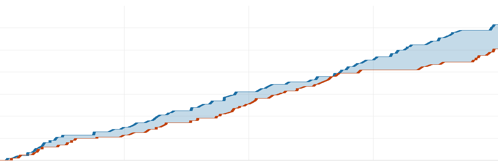

球不落·NBA 每日战报
2026-11-10美国时间
共 6 场 ｜ 每行格式：客队 比分 : 比分 主队
今天 6 场，最值得看的是魔术 107-100 国王：交替领先 5 次，打平 4 次，最后 0:21 分差还在 5 分以内。
焦点球星2 人
詹姆斯11分8板 5助·76人 负 凯尔特人
杨瀚森0分1板 0助·开拓者 胜 雷霆
推荐比赛2 场
人上人值得看 · 只差 7 分
| 1 | 2 | 3 | 4 |
| 分节 | 34-27 | 23-25 | 27-24 | 23-24 |
魔术最多领先 14 分，最终赢 7 分。
| 魔术 | 瓦格纳33分7板7助·Black26分7板5助·贝恩15分6板4助 |
| 国王 | 拉文31分3板2助·小达里厄斯·阿卡夫29分4板6助·亨特15分4板2助 |
|
命中率 |
三分 |
篮板 |
助攻 |
失误 |
| 魔术 |
44 | 27 | 48 | 21 | 14 |
| 国王 |
44 | 47 | 34 | 19 | 21 |
北京 11:00 开球 ｜ 魔术 3-7 ｜ 国王 1-10
人上人今日最功亏一篑
| 1 | 2 | 3 | 4 |
| 分节 | 29-25 | 35-29 | 28-18 | 23-37 |
爵士末节打出 37-23，但前面落后太多，最终仍差 6 分。
| 热火 | 字母哥30分11板4助·戴维恩·米切尔19分5板8助·拉尔森14分7板2助 |
| 爵士 | 彼得森25分4板4助·艾斯·贝利23分7板2助·科利尔17分5板5助 |
|
命中率 |
三分 |
篮板 |
助攻 |
失误 |
| 热火 |
39 | 29 | 40 | 24 | 8 |
| 爵士 |
49 | 39 | 49 | 28 | 19 |
北京 10:00 开球 ｜ 热火 5-6 ｜ 爵士 1-10
其余 4 场按开球时间
拉完了赢 32 分，从头花到尾
| 1 | 2 | 3 | 4 |
| 分节 | 21-26 | 13-32 | 38-27 | 13-32 |
尼克斯最多领先 32 分，最终赢 32 分。
| 雄鹿 | 哈克斯16分5板3助·罗林斯14分5板2助·雅库乔尼斯11分4助 |
| 尼克斯 | 布伦森23分4板2助·唐斯21分16板3助·阿努诺比19分3板2助 |
|
命中率 |
三分 |
篮板 |
助攻 |
失误 |
| 雄鹿 |
38 | 36 | 32 | 20 | 14 |
| 尼克斯 |
45 | 39 | 59 | 26 | 11 |
北京 08:30 开球 ｜ 雄鹿 1-10 ｜ 尼克斯 6-4
今日最佳一球
凯尔·韦尔 空中接力扣篮
雄鹿 85-117 尼克斯 · 第 4 节 剩 11:38
拉完了今日最平淡
| 1 | 2 | 3 | 4 |
| 分节 | 30-23 | 32-28 | 29-31 | 32-19 |

凯尔特人76人横轴为比赛进程
凯尔特人最多领先 29 分，最终赢 22 分。
| 凯尔特人 | 保罗·乔治36分5板1助·塔图姆21分6板4助·普里查德18分6板5助 |
| 76人 | 马克西24分1板4助·安芬尼·西蒙斯17分3板·恩比德16分6板1助 |
|
命中率 |
三分 |
篮板 |
助攻 |
失误 |
| 凯尔特人 |
51 | 45 | 43 | 28 | 9 |
| 76人 |
42 | 30 | 42 | 23 | 14 |
北京 09:00 开球 ｜ 凯尔特人 9-2 ｜ 76人 9-3
拉完了赢 23 分，全程没缠斗
| 1 | 2 | 3 | 4 |
| 分节 | 18-29 | 29-35 | 25-35 | 38-34 |
太阳最多领先 32 分，最终赢 23 分。
| 快船 | 八村塁13分5板1助·加兰13分5板6助·巴巴·米勒13分4板 |
| 太阳 | 古德温18分3板1助·布克17分3板5助·肯纳德14分1板3助 |
|
命中率 |
三分 |
篮板 |
助攻 |
失误 |
| 快船 |
42 | 34 | 37 | 28 | 13 |
| 太阳 |
56 | 51 | 48 | 32 | 19 |
北京 10:00 开球 ｜ 快船 2-8 ｜ 太阳 4-6
拉今日最胶着
| 1 | 2 | 3 | 4 |
| 分节 | 27-26 | 32-33 | 21-38 | 23-26 |
开拓者最多领先 22 分，最终赢 20 分。
| 雷霆 | 亚历山大26分8板3助·麦凯恩21分3板3助·阿贾伊·米切尔14分3板3助 |
| 开拓者 | 利拉德25分3板3助·阿夫迪亚24分6板8助·西索科17分3板3助 |
|
命中率 |
三分 |
篮板 |
助攻 |
失误 |
| 雷霆 |
44 | 36 | 45 | 20 | 12 |
| 开拓者 |
44 | 38 | 44 | 26 | 9 |
北京 12:00 开球 ｜ 雷霆 8-3 ｜ 开拓者 7-3
明日焦点
勇士@火箭
北京时间 11月12日 10:30 ｜ 火箭主场
ESPN 全美直播；两队战绩咬在一起（8胜3负 / 8胜3负）；库里、杜兰特 出战
战绩 8胜3负 / 8胜3负
另外这几场
马刺@公牛北京时间 11月12日 09:00
湖人@雄鹿北京时间 11月12日 09:00
雷霆@开拓者北京时间 11月12日 11:00
明天全联盟 10 场，上述是值得关注场次
球不落 ｜ 每天一份 NBA 战报，只写场上发生的事
本文基于公开赛事数据独立撰写，与 NBA 及任何转播平台无关联。
比赛日 2026-11-10（美国时间）｜ 数据来源：ESPN